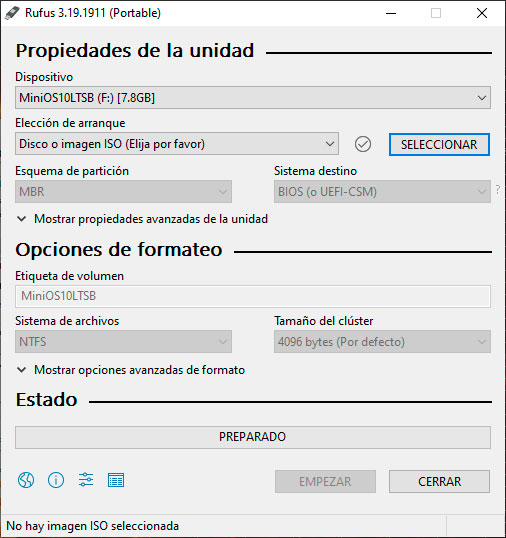
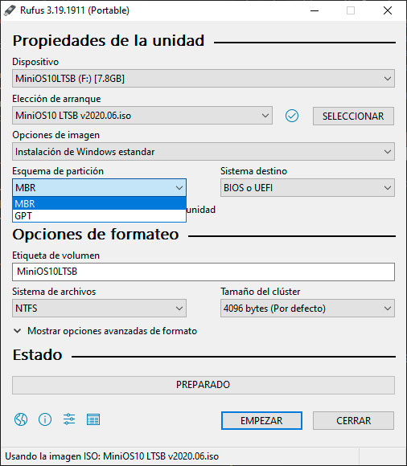
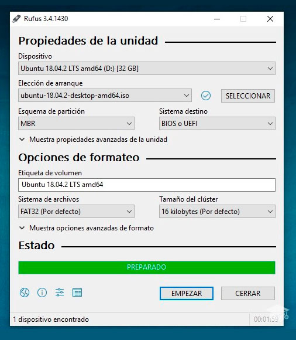
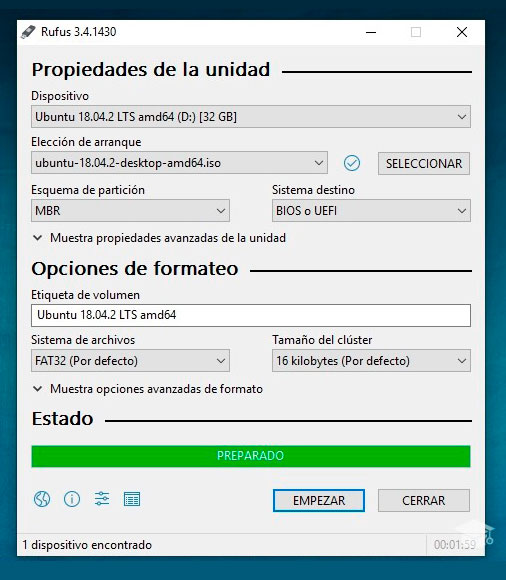

Herramientas para Instalar un Sistema operativo
- USB
- ISO del Sistema Operativo a Instalar
- Programa para Bootear el ISO en el USB
Proceso de Booteo
Con todas las herramientas necesarias vamos a proceder a introducir el USB en el equipo y a abrir la herramienta la cual usaremos para bootear el sistema operativo, en este caso el Rufus.
Ya con el programa abierto, procedemos a escoger la unidad de almacenamiento la cual vamos a bootear, posteriormente el ISO del sistema que se desea instalar.

Posteriormente escogemos el esquema de particiones de nuestro equipo y el tipo de sistema.
Finalmente presionamos el botón de empezar y el proceso de booteo iniciara mostrando un mensaje de preparado al culminar.
 
